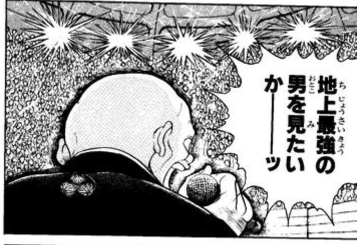
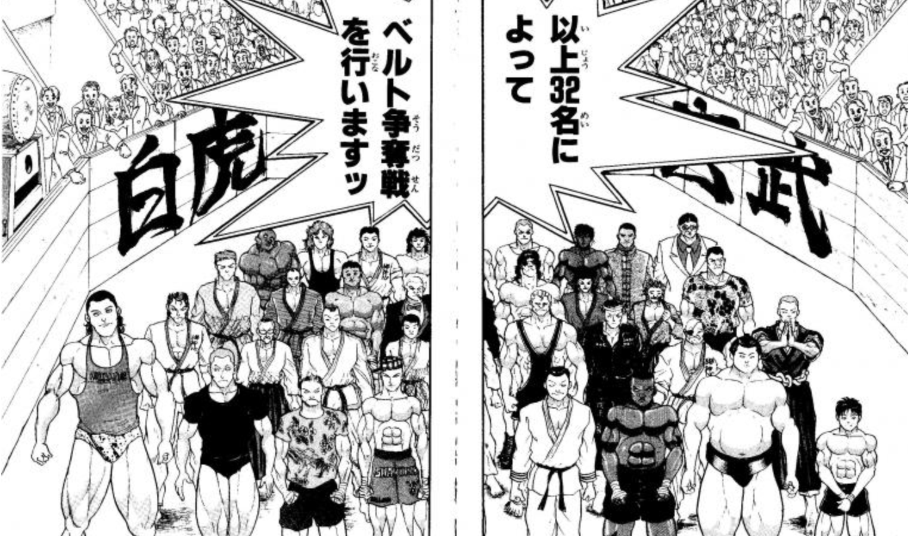
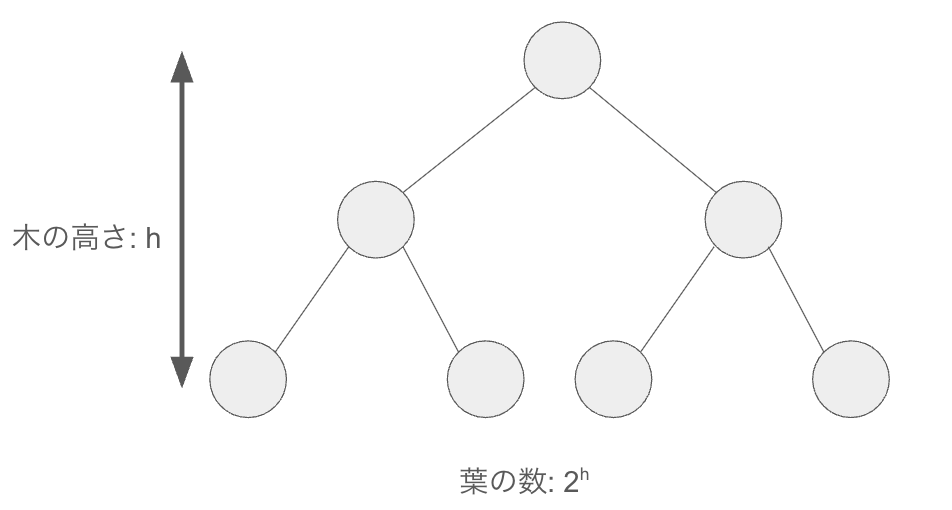

### 全ソートアルゴリズム入場！ ### 地下ソート場最大トーナメント！  <div class="caption"> * Credit: 板垣恵介、「グラップラー刃牙」21巻 (秋田書店) </div> --- ### 自己紹介 <div class="profile-container"> <div class="profile-left"> * さめ(мег-сск) * 🧑💻 フリーランスのソフトウェアエンジニア * 🧑🎓 社会人学生として通信制大学在学中 * 得意分野: * 📸 コンピュータビジョン (画像認識/点群処理) * 🌍 空間情報処理 (地理情報/リモートセンシング) * ☁️ クラウドインフラ設計/IaC (AWS, GCP) * [GitHub](https://github.com/s-sasaki-earthsea-wizard) * [YouTube](https://www.youtube.com/@SyotaSasaki-EW) * [Speaker Deck](https://speakerdeck.com/syotasasaki593876) </div> <div class="profile-right"> <img src="assets/images/icon_circle.png" alt="avatar" height="350px" width="350px"> </div> </div> --- ### 今日話すこと <div class="simple-box"> * 「最強のソートアルゴリズム」を決めるトーナメントを開催するッ！ * 最大ソートアルゴリズムのトーナメントの意外な決着とはッ！？ * 「最強」とは？ </div> <br> <div class="highlight-box"> * 刃牙を読んだことのない人は意味不明なネタですみません... </div> --- ### ソートとはッ！？ <div class="simple-box"> * ソートとはデータを特定の順序に並べ替えること * 人類は研鑽を積み様々なソートアルゴリズムを開発してきた... </div> <img src="assets/images/sorting.jpg" height="350px"> <div class="caption"> * Credit: [Learning Functional Data Structures And Algorithms](https://www.aiophotoz.com/learning-functional-data-structures-and-algorithms/ZmFzdGVzdC1pbi1wbGFjZS1zdGFibGUtc9-ydC1jb9RlcHJvamVjdHx8YWlvcGhvdG-6LmNvbXx8aHR0cHM6Ly-zdGF0aWMucGFja3QtY9RuLmNvbS-wcm-kdWN0cy85NzgxNzg1ODg4NzMxL9dyYXBoaWNzL9ltYWdlXzEzXzAwMi5qcGc.gif.html) </div> --- ### 代表的なソートアルゴリズム <div class="simple-box"> * マージソート * クイックソート * ヒープソート * and so on... </div> <br> <div class="highlight-box"> * 誰もが思った、「最強のソートアルゴリズム」はどれか？ * 今夜、「最強のソートアルゴリズム」を決めるトーナメントを開催ッ！ </div> --- ## 全アルゴリズム入場！ <div class="caption"> * Credit: 板垣恵介、「グラップラー刃牙」21巻 (秋田書店) </div> --- ### クイックソートッ！ <div class="simple-box"> ピボット選択は生きていた!!更なる分割を積みインプレース凶器が甦った!!!<br> 武神!!クイックソートだァ――――!!! </div> <div class="caption"> * Credit: 板垣恵介、「グラップラー刃牙」21巻 (秋田書店) </div> --- ### ヒープソートッ！ <div class="simple-box"> 並べたいからここまできたッ 最初の考案者は不明!!!!<br> 完全二分木のピットファイター ヒープソートだ!!! </div> <div class="caption"> * Credit: 板垣恵介、「グラップラー刃牙」21巻 (秋田書店) </div> --- ### ティムソートッ！ <div class="simple-box"> Pythonistの前でならオレはいつでも全盛期だ!!<br> 燃える闘魂 ティム・ピーターズのティムソート 本名で登場だ!!! </div> <div class="caption"> * Credit: 板垣恵介、「グラップラー刃牙」21巻 (秋田書店) </div> --- ### マージソートッ！ <div class="simple-box"> めい土の土産にメモリーとはよく言ったもの!!<br> フォン・ノイマンの奥義が今 実戦でバクハツする!! ロスアラモス流ソート術 マージソートだ―――!!! </div> <div class="caption"> * Credit: 板垣恵介、「グラップラー刃牙」21巻 (秋田書店) </div> --- ### イントロソートッ！ <div class="simple-box"> ソートは実装で使えてナンボのモン!!! 超実戦C++術!!<br> 本家STLからイントロソートの登場だ!!! </div> <img src="assets/images/motobe.png" height="300px"> <div class="caption"> * Credit: 板垣恵介、「グラップラー刃牙」21巻 (秋田書店) </div> --- ### シェルソートッ！ <div class="simple-box"> 挿入ソートだったらこのアルゴリズムを外せない!! 超Ａ級ソート師 シェルソートだ!!! </div> <div class="caption"> * Credit: 板垣恵介、「グラップラー刃牙」21巻 (秋田書店) --- ### スムースソートッ！ <div class="simple-box"> ほとんどソート済みの数列のソートはこのアルゴリズムが完成させた!!<br> ダイクストラの切り札!! スムースソートだ!!! </div> <div class="caption"> * Credit: 板垣恵介、「グラップラー刃牙」21巻 (秋田書店) </div> --- ### ペーシェンスソートッ！ <div class="simple-box"> ソリティア四千年の歴史が今ベールを脱ぐ!! <br> 最長増加部分列から ペーシェンスソートだ!!! </div> <div class="caption"> * Credit: 板垣恵介、「グラップラー刃牙」21巻 (秋田書店) </div> --- <div class="simple-box"> 以上8名によってベルト争奪戦を行いますッ！ </div>  <div class="caption"> * Credit: 板垣恵介、「グラップラー刃牙」21巻 (秋田書店) </div> --- ## 地下ソート場最大トーナメントの意外な決着ッ！ --- ### 全員引き分け、全員優勝！ <div class="simple-box"> * 全試合が引き分けとなり、全員優勝となりました！ </div> <br> <div class="highlight-box"> * なぜ格闘漫画だったら読者からのブーイング必須な結果になってしまったのか？ </div> --- ## ソートアルゴリズムの理論下限 --- ### ソートアルゴリズムの理論下限 <div class="simple-box"> * ソートアルゴリズムはこれ以上速くできない理論下限がある * 今日の選手はすべてこの理論下限に達していた </div> <br> <div class="highlight-box"> * **なぜソートにはこれ以上速くできない理論下限があるのか？** </div> --- ### すべての並び替えの組み合わせの数 <div class="simple-box"> $ n $ 個の数値を並び替える組み合わせの数は、$ n! $ 通り </div> <br> <div class="highlight-box"> * $ n! $ 通りの中からたった一つの正解を見つける必要がある </div> --- ### 二分木の高さと葉の数 <div class="simple-box"> * 二分木の高さを $ h $ とすると、最大で$ 2^h $ 個の並べ替えの組み合わせを比較できる </div>  --- ### 必要な木の高さは？ <div class="simple-box"> すべての数字の並びを比較するには $$ n! \leq 2^h $$ が必要！ </div> --- ### スターリングの公式 <div class="simple-box"> * ガンマ関数(階乗の一般化)を近似できる便利な公式 </div> $$ n! \approx \sqrt{2 \pi n} \left(\frac{n}{e}\right)^n $$ </div> <img src="assets/images/Stirling's_Approximation.png" height="350px"> --- ### 木の高さを求める不等式を解く $$ n! \leq 2^h $$ $$ \log_2 n! \leq h $$ 左辺をスターリングの公式で近似すると $$ \log_2 n! \approx \log_2 \left( \sqrt{2 \pi n} \left(\frac{n}{e}\right)^n \right) $$ --- ### さらに計算していく $$ \log_2 \sqrt{2 \pi n} + n \log_2 \left(\frac{n}{e}\right) $$ $$ \frac{1}{2} \log_2 (2 \pi n) + n \log_2 n - n \log_2 e $$ <div class="simple-box"> * 残った3つの項のうち、最も大きな項が計算量に影響する * 一番大きな項は？ </div> --- ### 数学的補足: 計算量の表現記法 <div class="simple-box"> * 上界: $O(\cdot)$、必要な計算量の上限 * 下界: $\Omega(\cdot)$、最低でも絶対に必要な計算量 * 厳密計算量: $\Theta(\cdot)$、上界と下界が一致する場合 </div> --- ### オーダーの比較 <div class="simple-box"> * $ \frac{1}{2} \log_2 (2 \pi n) = O(\log n) $ * $ n \log_2 n = O(n \log n) $ 👈 これが一番大きい * $ n \log_2 e = O(n) $ </div> <br> <div class="highlight-box"> * 一番計算量が大きく支配的な項は $ n \log_2 n $ * $n$ が十分に大きくなると、この項以外は無視してもOK！ $$ \log_2 n! = \Omega(n \log n) $$ </div> --- ### 数列をソートするのに必要な木の高さは？ <div class="simple-box"> $$ h \geq \log_2 n! = \Omega(n \log n) $$ * いろんな近似をしているが、**計算量の下界($\Omega(\cdot)$)の観点からは厳密に正しく、等号が成り立つ** </div> --- ### ソートアルゴリズムの「最速」 <div class="highlight-box"> * どんなにソートの計算を効率化しても、$\Omega(n \log n)$ の計算量は避けられない * **これが理論上最速、これ以上に速い「汎用的」なソートアルゴリズムは存在しない！** </div> --- ### 今日の選手たちの「平均」計算量 <div class="simple-box"> * クイックソート: $O(n \log n)$ * ヒープソート: $O(n \log n)$ * マージソート: $O(n \log n)$ * and so on... </div> <br> <div class="highlight-box"> * 今日の選手たちは皆、平均計算量は理論下限の $O(n \log n)$ に達していた！ * だから全員引き分けの全員優勝！ </div> --- ## 各アルゴリズムの得意・不得意 --- ### クイックソート <div class="simple-box"> * 平均計算量は $O(n \log n)$ * 最悪計算量は $O(n^2)$ </div> <br> <div class="highlight-box"> * 長所: インプレース(追加メモリ不要) * 短所: 最悪計算量が $O(n^2)$ * 逆順に並んでいる場合、最悪計算量になる * (5, 4, 3, 2, 1, 0) → (0, 1, 2, 3, 4, 5) と並べ替えるのは苦手 </div> --- ### ヒープソート <div class="simple-box"> * 平均計算量は $O(n \log n)$ * 最悪計算量は $O(n \log n)$ </div> <br> <div class="highlight-box"> * 長所: 最悪計算量が $O(n \log n)$、インプレース * 短所: ランダムアクセスが必要 (並列化が難しい) </div> --- ### マージソート <div class="simple-box"> * 平均計算量は $O(n \log n)$ * 最悪計算量は $O(n \log n)$ </div> <br> <div class="highlight-box"> * 長所: 最悪計算量が $O(n \log n)$、安定ソート * 短所: 追加で $O(n)$ のメモリが必要 * 元々の数列以外にもう一つの数列を覚えておく必要がある * 小さな数列の場合はメモリを確保するのがオーバーヘッドになる </div> --- ### ソートアルゴリズムの使い分け <div class="simple-box"> * 一般的な用途 → クイックソート（多くの言語の標準） * 安定性が必要 → マージソート * リアルタイム性重視 → ヒープソート（最悪保証かつインプレース） </div> <br> <div class="highlight-box"> * ソートアルゴリズムに**「最強」は存在しない** * 得意・不得意があり、**「最適」があるのみ** </div> --- ### 特定条件下で強いアルゴリズム <div class="simple-box"> * 平均パフォーマンスでは今日のトーナメント出場選手たちに劣るが、特定条件下ではより高速 </div> <br> <div class="highlight-box"> * 基数ソート: $O(kn)$ * 入力データが限定されている場合に有効 * カウンティングソート: $O(n + k)$ * 値の範囲が小さい場合に有効 * バケットソート: $O(n)$ * 入力データが一様分布している場合に有効 </div> --- ### まとめ <div class="simple-box"> * ソートアルゴリズムに**「最強」は存在しない** * 得意・不得意があり、**「最適」があるのみ** * 汎用的にはパフォーマンスが劣っていても、特定条件下では圧倒的に強くなるアルゴリズムもある * 公園最強の本部みたいなもの </div> <br> <div class="highlight-box"> * **みんなちがって、みんないい** * それぞれの特性を把握して、状況に応じた適切なアルゴリズムを選ぶことが重要！ </div> --- ### おまけ <div class="simple-box"> * **ただしバブルソート、テメーはダメだ** * 「最強」は存在しないが明確な悪手は存在する * Leet Codeだとバブルソート的な計算量 $O(n^2)$ のアルゴリズムはTLEになるので効率化が重要！ </div> <div class="caption"> * Credit: 澤井啓夫、「ボボボーボ・ボーボボ」1巻 (集英社) </div>